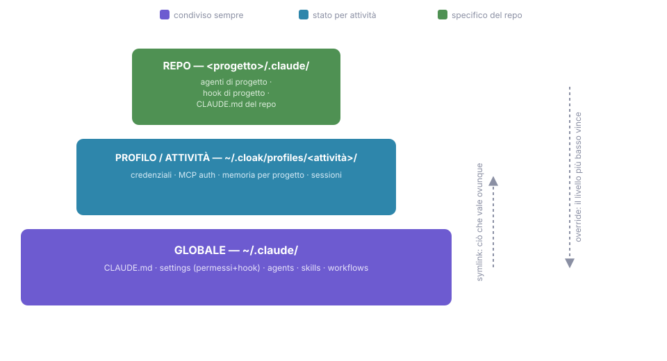

16 - A real setup: global, per client, per repo¶
This chapter describes the author's day-to-day setup (July 2026), sanitized: no client names, no work-project details. It's the "how far you can take it" after the rest of the guide, not the starting point.
The problem it solves¶
If you work for several clients, a single ~/.claude/ isn't enough: one
client's memory shouldn't leak into another client's sessions, integrations
(client A's Jira, client B's GitLab) shouldn't even exist in the wrong
context, and your personal preferences need to apply everywhere without
copying them ten times over. The answer is to organize the setup into three
levels, each with its own job:
| Level | Where it lives | What goes in it |
|---|---|---|
| Global | ~/.claude/ (shared across profiles) |
who you are: preferences, security, cross-cutting tools |
| Client | an isolated profile per client | the context: memory, permissions, integrations, domain skills |
| Repo | .claude/ in the project |
the code: conventions, hooks, agents and maps for that codebase |
Where something belongs
The rule for deciding: put it at the highest level where it holds true for everything underneath. Always true → global. True for one client → profile. True for one repo → repo.

Global level: who you are¶
My ~/.claude/ holds the things that never change, no matter which client
I'm working for that day:
- A lean CLAUDE.md (about forty lines): language, commit style, Python
tooling via
uv, the "delegate to agents by default" rule, and the "just-in-time agents" rule (if an ad hoc role comes up twice, it becomes a persistent agent; that's how half the list below was born). - The deny-list on secrets (ch. 02): any path containing credentials is unreadable to any session, always, shell workarounds included.
- The token-saving hook (ch. 15): rtk rewrites commands transparently, on any project.
- About fifteen advisory agents covering my various professional hats (Python, IaC, data engineering, architecture, frontend, DevOps…), all following the "advise, don't edit" pattern and with clear boundaries against neighboring agents spelled out in their descriptions.
- Cross-cutting skills: prose review (one reviewer per language), the translation-plus-sync pair that keeps this guide bilingual, screenshot capture, the Playwright core for driving a browser.
One infrastructure detail that pays off: client profiles (below) don't copy this base, they link to it. Global rules, agents and skills are symlinked into every profile: update one file, it applies everywhere, no copies drifting out of sync.
Maintaining the global level: four recent decisions¶
The global level isn't "write once and forget": it needs revisiting now and then. The latest review (July 2026) is a good sample of the kind of decisions this level demands, along with the lessons they carry:
- From a generic rule to a map of cases. "Delegate to agents by default" was a nice sentiment, but sentiments don't hold much weight when the model is actually deciding what to do next. I paired it with a line of concrete examples — non-trivial bug → debugger, noisy test suites → test-runner, stack choices → architect before implementing — and that cost two lines of CLAUDE.md but turned delegation into a reflex instead of a principle. Lesson: in CLAUDE.md, examples beat precepts.
- Pinning a model sets a ceiling, not just a cost. Advisory agents were originally pinned to whatever flagship model was current at the time; once the session moved to a stronger model, that pin had turned into a ceiling — the session was reasoning better than its own consultants. Now advisors don't declare a model at all (they inherit whatever the session is running), while mechanical agents (test-runner, translators) stay pinned to small models. The rule I distilled from this: whoever thinks inherits the best available, whoever executes stays cheap.
- Rules with no exceptions become hooks. A rule in CLAUDE.md is an
instruction the model almost always follows; a hook (ch. 07) follows it
always. My commit rules now have both layers: the prose in CLAUDE.md
explains the intent, a PreToolUse on
git commitmechanically blocks messages that violate it — with deliberately narrow patterns, because a guardian that cries wolf on false positives ends up disabled. The criterion for choosing: if even an "almost never" violation is still one too many, that rule deserves a hook. - The allowlist gets measured, not guessed. The real friction on agent
autonomy wasn't the rules, it was the permission prompts. Instead of
widening the list by gut feel, I used the built-in
/fewer-permission-promptsskill to analyze recent transcripts: turns out most of it was already covered by auto-allow and existing rules, with only three real additions to show for it.
Two non-negotiable limits
Never allowlist interpreters (python, node… that's arbitrary
execution under another name) and never a generic curl (it can POST
and exfiltrate anything it reads).
Maintenance also includes the no's: in the same review I evaluated a keyless web-search MCP server and chose not to adopt it — too immature, and the native tools already cover most of it. A well-reasoned no, with a memory note on when to check again, is maintenance too.
Client level: one profile per context¶
The mechanism underneath is the one from ch. 02: CLAUDE_CONFIG_DIR moves
the entire configuration. I manage it with
cloak
(npm install -g @synth1s/cloak): named profiles you create and put on in
one command — cloak create cliente-a, cloak switch cliente-a — with the
"wardrobe" list always a cloak ls away. The principle works by hand too,
without installing anything:
CLAUDE_CONFIG_DIR=~/.profili/cliente-a claude
Each profile is its own world: its own session history, its own persistent memory (lessons learned on one client don't surface in another client's sessions), its own MCP servers and permissions. The practical payoffs that make me love it:
- Integration isolation: client A's profile has the credentials for their Jira; in every other profile that Jira simply doesn't exist. A whole class of incidents ("I posted on the wrong ticket") becomes impossible by construction.
- Domain skills: procedures that only apply to one client (their
delivery pipeline, their product screenshots) live in that client's
profile instead of cluttering everyone else's
/menu. - Routed documentation: a profile-level skill writes project notes into a vault organized by client, so knowledge accumulates in the right place without having to decide each time.
Repo level: the code in front of you¶
Everything from ch. 02 and 04 applies here (project CLAUDE.md, a committed
settings.json), plus the pieces that show up once a repo becomes "home
turf":
- Project hooks: the PostToolUse autoformat (ch. 07) tuned to the
repo's formatter (in my main repo, a
make formatthat keeps CI permanently green). - Project agents (committed under
.claude/agents/): a gate-runner on a small model that runs the build gate in an isolated context and reports only the verdict, and a read-only guardian that reviews every diff against the repo's architectural invariants. Both are ch. 06 in practice: noise stays out of the session, powers stay minimal. - Scaffolding skills: when the repo has components with a fixed anatomy (the same N files every time, conformance tests), a skill generates them right on the first try.
graphify: a map of the codebase¶
The newest addition to this level, currently in pilot adoption:
graphify turns a codebase into
a queryable knowledge graph — graphify query "who implements this
interface?" instead of three rounds of grep and five files read. Parsing
happens locally (tree-sitter), and for agents it's a force multiplier: the
reconnaissance that used to eat up half the context window (ch. 03) becomes
a single query.
It complements rtk rather than overlapping with it: rtk compresses the output of the commands you run, graphify lets you skip running them in the first place. The rules I've settled on after studying it:
- Per-repo only, never global: it installs into the project's
.claude/(project mode); the graph itself is a local artifact you.gitignore. - Pin the version: it's pre-1.0 with frequent releases. Watch the
package name too:
uv tool install graphifyy==<version>has a double y (the "clean" name on PyPI belongs to a different project). - Where it pays off: large codebases you haven't read yourself, a new client's, or your own vibe-coded projects (the agent wrote the code: you know the product, not the code). Cross-repo only when the repos genuinely form one system (a data platform spread across ten repos, yes; a folder of unrelated projects, no, since you'd end up with disconnected islands stitched together by guesswork).
- What it isn't: it doesn't replace persistent memory or a notes vault. Those hold experiential knowledge ("I've already tried this tool, here's what I learned"); graphify only extracts structural relationships from the code. If a lesson was never written down, no graph will invent it; if it was written down, you'll find it without a graph.
In short¶
Three levels, three questions: is it true everywhere? → global; is it true for this client? → profile; is it true for this code? → repo. The setup grows just-in-time like everything else in this guide. None of the pieces above came out of an afternoon of configuring: each one arrived once the need had asked for it twice.